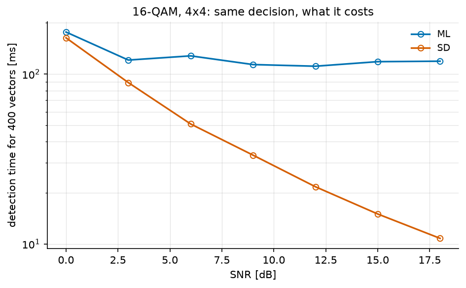

MIMO Chain Tutorial#
This tutorial shows how to simulate a MIMO (Multiple-Input Multiple-Output)
communication system with comnumpy, and how the classical detectors
compare on it.
Note
Before you start. Monte Carlo Simulation over AWGN Channel introduced monte_carlo. Here the
averaging over fading is a batch: a fixed stack of channel draws is
built into each chain, and the sweep only moves the noise. The chain
is the same object; only the number of antennas changes.
What you’ll learn:
How to build a MIMO simulation chain with Rayleigh fading.
What the equalization problem looks like on the received constellations.
How ZF, MMSE, OSIC, ML and sphere decoding differ, and what each one costs.
How to run a Monte Carlo evaluation of the Symbol Error Rate (SER).
This tutorial is suited for engineers and students learning about MIMO systems, combining practical examples with theoretical background.
System Model#
A MIMO link transmits \(N_t\) symbol streams from \(N_t\) antennas and receives them on \(N_r\) antennas. Over a flat-fading channel, the received vector at time \(n\) is
where \(\mathbf{x}[n] \in \mathcal{M}^{N_t}\) holds the transmitted symbols, \(\mathbf{H} \in \mathbb{C}^{N_r \times N_t}\) is the channel matrix, and \(\mathbf{b}[n]\) is a circular Gaussian noise of variance \(\sigma^2\) per antenna.
Every receive antenna therefore observes a mixture of all the streams. Recovering \(\mathbf{x}[n]\) from \(\mathbf{y}[n]\) is the detection problem, and it is what the rest of this tutorial is about.
Implementation#
We start with the imports and the parameters:
"""MIMO detection: one spatial mixture, five ways to undo it.
Run from this directory: it writes the tutorial's figures into
../../docs/tutorials/.
"""
import time
import numpy as np
import matplotlib.pyplot as plt
from comnumpy import monte_carlo, print_data, style
from comnumpy.core import Sequential
from comnumpy.core.generators import SymbolGenerator
from comnumpy.core.mappers import SymbolMapper
from comnumpy.core.metrics import compute_ser
from comnumpy.core.utils import Constellation
from comnumpy.core.visualizers import plot_error_rate, plot_iq
from comnumpy.mimo.channels import AWGN, FlatMIMOChannel
from comnumpy.mimo.detectors import (
LinearDetector, MaximumLikelihoodDetector,
OrderedSuccessiveInterferenceCancellationDetector, SphereDecoder)
from comnumpy.mimo.utils import rayleigh_channel
style.use()
img_dir = "../../docs/tutorials/img/"
N = 1000
N_r, N_t = 3, 2
constellation = Constellation("PSK", 4)
M = constellation.order
sigma2 = 0.1
The channel is drawn once, with a seed: this first half of the tutorial is about one realization, so it must be the same one on every run. One chain, transmitter to decision, closed by the most direct detector – zero forcing:
# --- the problem: one channel draw, one chain, zero forcing -----------
H = rayleigh_channel(N_r, N_t, seed=0)
chain = Sequential([
SymbolGenerator(M, name="tx"),
SymbolMapper(constellation),
FlatMIMOChannel(H, name="channel"),
AWGN(sigma2=sigma2, name="noise"),
LinearDetector(constellation, H=H, method="zf", name="detector"),
], taps=["tx", "noise"], name=f"{N_r}x{N_t} MIMO, ZF")
chain.seed(0)
detected = chain((N_t, N))
print(f"ZF, one channel draw: SER = "
f"{compute_ser(chain.tap('tx'), detected):.4f}")
ZF, one channel draw: SER = 0.0025
Received Constellations#
Let us look at what each receive antenna sees, read from the "noise" tap:
Y = chain.tap("noise")
fig1, axes1 = plt.subplots(nrows=1, ncols=N_r, figsize=(4 * N_r, 4))
for index in range(N_r):
plot_iq(Y[index, :], ax=axes1[index])
axes1[index].set_title(f"Received signal (antenna {index + 1})")
axes1[index].set_xlim([-2, 2])
axes1[index].set_ylim([-2, 2])
plt.savefig(f"{img_dir}/monte_carlo_mimo_fig1.png")

No constellation is visible on any antenna: each one observes a mixture of the two streams. The ZF estimator inverts that mixture:
Z = chain["detector"].linear_estimator(Y)
fig2, axes2 = plt.subplots(nrows=1, ncols=N_t, figsize=(4 * N_t, 4))
for index in range(N_t):
plot_iq(Z[index, :], reference=constellation, ax=axes2[index])
axes2[index].set_title(f"Estimated signal (stream {index + 1})")
axes2[index].set_xlim([-2, 2])
axes2[index].set_ylim([-2, 2])
plt.savefig(f"{img_dir}/monte_carlo_mimo_fig2.png")

The estimated points now cluster around the ideal constellation points (black crosses), but the residual noise is larger than the channel noise: inverting a badly conditioned matrix amplifies it. How to avoid paying that price is what separates the detectors below.
Detection Strategies#
The five detectors are five answers to one question: what to do with the interference that the other streams put on top of the one being read. One channel realization proves nothing about them – over fading, the error rate is an average, dominated by the rare draws where the matrix is nearly singular – so each answer is judged over the same 200 channel draws, stacked into a batch: one draw is one row (D51), the channel block propagates draw \(k\) on frame \(k\), and each detector holds the same stack. The draws and the sweep are set up once:
# --- the detectors, averaged over fading ------------------------------
# The SAME K channel draws serve every SNR point: one draw is one row
# of the batch (D51). Each technique below is one chain built with the
# stack -- on the channel block and on the detector -- followed by its
# own Monte-Carlo sweep: monte_carlo moves the noise variance, and the
# detectors that weight by sigma2 receive it too, through the zip of
# two parameter paths. No simulation loop.
K = 200
n_symbols = 200
snr_dB_list = np.arange(0, 20, 3)
sigma2_list = N_t * 10.0 ** (-snr_dB_list / 10)
both = list(zip(sigma2_list, sigma2_list, strict=True))
stimulus = (K, N_t, n_symbols)
H_stack = rayleigh_channel(N_r, N_t, seed=1, size=K)
curves = {}
Each technique is then three things – an idea, one chain, one sweep.
Zero forcing (ZF)#
The most direct answer is to invert the channel. With \(N_r \geq N_t\), the pseudo-inverse \(\mathbf{H}^{\dagger} = (\mathbf{H}^H\mathbf{H})^{-1}\mathbf{H}^H\) is a left inverse, so
and the interference is removed exactly, whatever the SNR. The price is the second term: the noise on stream \(i\) comes out with variance \(\sigma^2 [(\mathbf{H}^H\mathbf{H})^{-1}]_{ii}\), which explodes when two columns of \(\mathbf{H}\) are nearly parallel. This is noise enhancement. It also costs diversity: each stream spends \(N_t-1\) of its \(N_r\) degrees of freedom cancelling the others, leaving a diversity order of \(N_r - N_t + 1\) instead of \(N_r\).
# --- zero forcing ----------------------------------------------------
zf = Sequential([
SymbolGenerator(M, name="tx"),
SymbolMapper(constellation),
FlatMIMOChannel(H_stack, name="channel"),
AWGN(sigma2=1.0, name="noise"),
LinearDetector(constellation, H=H_stack, method="zf",
name="detector"),
], taps=["tx"], name="ZF")
curves["ZF"] = monte_carlo(
zf, "noise.sigma2", sigma2_list, {"ser": compute_ser},
stimulus, reference="tx", seed=1)["ser"]
Minimum mean square error (MMSE)#
If exact cancellation is what costs, then buy less of it. The MMSE receiver minimizes \(\mathbb{E}[\|\mathbf{x} - \mathbf{W}\mathbf{y}\|^2]\) rather than the interference alone:
The only difference is the \(\sigma^2 \mathbf{I}\) added before inverting, which keeps the inverse bounded when the channel is ill conditioned. As \(\sigma^2 \to 0\) it is zero forcing; as \(\sigma^2 \to \infty\) it becomes the matched filter \(\mathbf{H}^H\). In between it accepts a little residual interference in exchange for much less amplified noise. It does not buy diversity, which is why the ZF and MMSE curves run parallel. Because the detector weights by \(\sigma^2\), the sweep zips the noise variance into it, one pair of dotted parameters per point:
# --- MMSE ------------------------------------------------------------
mmse = Sequential([
SymbolGenerator(M, name="tx"),
SymbolMapper(constellation),
FlatMIMOChannel(H_stack, name="channel"),
AWGN(sigma2=1.0, name="noise"),
LinearDetector(constellation, H=H_stack, method="mmse", sigma2=1.0,
name="detector"),
], taps=["tx"], name="MMSE")
curves["MMSE"] = monte_carlo(
mmse, ("noise.sigma2", "detector.sigma2"), both, {"ser": compute_ser},
stimulus, reference="tx", seed=2)["ser"]
Ordered successive interference cancellation (OSIC)#
Detect the stream with the best post-detection SNR, subtract its contribution
\(\mathbf{h}_i \widehat{x}_i\) from the observation, and repeat on a
channel with one column fewer. The second stream is then detected with one
interferer less, the third with two less, and so on. The last stream enjoys
the full \(N_r\) diversity, the first only \(N_r - N_t + 1\), which
is why the ordering matters and why osic_type="sinr" sorts by
post-detection SNR (the V-BLAST rule). The price is error propagation: a
wrong decision is subtracted as if it were right.
# --- OSIC ------------------------------------------------------------
osic = Sequential([
SymbolGenerator(M, name="tx"),
SymbolMapper(constellation),
FlatMIMOChannel(H_stack, name="channel"),
AWGN(sigma2=1.0, name="noise"),
OrderedSuccessiveInterferenceCancellationDetector(
constellation, osic_type="sinr", H=H_stack, sigma2=1.0,
name="detector"),
], taps=["tx"], name="OSIC")
curves["OSIC"] = monte_carlo(
osic, ("noise.sigma2", "detector.sigma2"), both, {"ser": compute_ser},
stimulus, reference="tx", seed=3)["ser"]
Maximum likelihood (ML)#
Both linear detectors treat the streams one at a time. The optimal receiver refuses that split and scores the candidate vectors jointly:
Nothing is inverted, so nothing is amplified, and every receive antenna contributes to every stream: the diversity order is \(N_r\). The cost is that the minimum is taken over \(|\mathcal{M}|^{N_t}\) vectors – 16 here, but 65 536 for 16-QAM on four streams. ML compares distances and never needs \(\sigma^2\), so its sweep moves the noise alone:
# --- maximum likelihood ----------------------------------------------
ml = Sequential([
SymbolGenerator(M, name="tx"),
SymbolMapper(constellation),
FlatMIMOChannel(H_stack, name="channel"),
AWGN(sigma2=1.0, name="noise"),
MaximumLikelihoodDetector(constellation, H=H_stack, name="detector"),
], taps=["tx"], name="ML")
curves["ML"] = monte_carlo(
ml, "noise.sigma2", sigma2_list, {"ser": compute_ser},
stimulus, reference="tx", seed=4)["ser"]
Sphere decoding (SD)#
The sphere decoder returns the same vector as ML without visiting every candidate. Writing the thin QR decomposition \(\mathbf{H} = \mathbf{Q}\mathbf{R}\) and projecting the observation on \(\mathbf{z} = \mathbf{Q}^H\mathbf{y}\), the metric becomes a sum whose \(k\)-th layer only involves the layers already decided:
Every term is non-negative, so a partial sum can only grow. As soon as it exceeds the best complete metric found so far, the entire subtree below it can be discarded: it cannot contain the minimum. Only the lattice points inside a shrinking ball are ever visited, and nothing is approximated, so the decision is exactly the ML one.
# --- sphere decoder --------------------------------------------------
sd = Sequential([
SymbolGenerator(M, name="tx"),
SymbolMapper(constellation),
FlatMIMOChannel(H_stack, name="channel"),
AWGN(sigma2=1.0, name="noise"),
SphereDecoder(constellation, H=H_stack, name="detector"),
], taps=["tx"], name="SD")
curves["SD"] = monte_carlo(
sd, "noise.sigma2", sigma2_list, {"ser": compute_ser},
stimulus, reference="tx", seed=5)["ser"]
Note
Diversity orders are claims about a limit, and the SNR range simulated
here stops at 18 dB, which is not the asymptotic regime. They are
checked where a limit can be reached: validation/mimo_zf_ml_ber.py
confirms diversity 1 for zero forcing and 2 for maximum likelihood on a
2x2 channel, against the closed forms of comnumpy.core.metrics
(decision D7).
Results#
The five curves come from the same dictionary, shown twice:
# --- results: table and figure ---------------------------------------
print()
print_data({"x": snr_dB_list, "curves": curves},
xlabel="snr_dB", ylabel="SER")
ax = plot_error_rate(snr_dB_list, curves, ylabel="SER",
title=f"{N_r}x{N_t} MIMO, {M}-PSK, "
f"{K} channel draws per point")
ax.set_ylim(1e-4, 1)
plt.tight_layout()
plt.savefig(f"{img_dir}/monte_carlo_mimo_fig3.png")
SER
snr_dB ZF MMSE OSIC ML SD
-------------------------------------------------------
0 0.33427 0.28820 0.28735 2.851e-01 2.868e-01
3 0.21634 0.17955 0.16855 1.613e-01 1.620e-01
6 0.11209 0.09271 0.07311 6.785e-02 6.871e-02
9 0.04911 0.04034 0.02546 2.057e-02 2.095e-02
12 0.01876 0.01570 0.00779 4.700e-03 4.950e-03
15 0.00719 0.00583 0.00243 8.125e-04 6.875e-04
18 0.00286 0.00196 0.00100 1.000e-04 2.500e-05

The ordering is the textbook one and it holds at every SNR: ML is the best, OSIC follows, MMSE beats ZF everywhere, and the gap widens with the SNR – at 18 dB, ML is an order of magnitude below ZF. The reason is the slope: with \(N_r = 3\) receive antennas and \(N_t = 2\) streams, ML enjoys the full receive diversity while a linear detector spends part of it cancelling the other stream. The ML and SD rows differ only by their noise draws (each sweep reseeds its own chain): where they share a seed they are digit for digit the same decision, which is the sphere decoder’s claim.
The last rows sit near the estimator’s floor: 2.5e-05 out of 40 000 symbols per point is one error, not a rate.
Computational Cost#
Since ML and SD return the same decision, what separates them is their cost. The 4-PSK link above has only 16 candidates, where an exhaustive search is a single matrix product; the regime the sphere decoder exists for is the one where that product no longer fits. We therefore time both detectors on 16-QAM over four streams, i.e. 65 536 candidates per vector:
# --- what the pruning is worth, in seconds ---------------------------
# 16-QAM on four streams: 65 536 candidates per vector, which is where
# the exhaustive search and the sphere decoder stop costing the same.
print("\n16-QAM, 4x4: same decision, what it costs")
big_constellation = Constellation("QAM", 16)
big_H = rayleigh_channel(4, 4, seed=2)
ml_16 = Sequential([
SymbolGenerator(big_constellation.order, name="tx"),
SymbolMapper(big_constellation),
FlatMIMOChannel(big_H, name="channel"),
AWGN(sigma2=1.0, name="noise"),
MaximumLikelihoodDetector(big_constellation, H=big_H,
name="detector"),
], taps=["tx"], name="4x4 MIMO, ML")
sd_16 = Sequential([
SymbolGenerator(big_constellation.order, name="tx"),
SymbolMapper(big_constellation),
FlatMIMOChannel(big_H, name="channel"),
AWGN(sigma2=1.0, name="noise"),
SphereDecoder(big_constellation, H=big_H, name="detector"),
], taps=["tx"], name="4x4 MIMO, SD")
elapsed = {"ML": np.zeros(len(snr_dB_list)),
"SD": np.zeros(len(snr_dB_list))}
# --- simulation loop -------------------------------------------------
# A wall time is measured per point, so the sweep stays a loop -- one
# loop, over the SNR, with both chains timed explicitly in the body.
for index, snr_dB in enumerate(snr_dB_list):
sigma2_point = 4 * 10 ** (-snr_dB / 10)
ml_16.seed(4)
ml_16.set_params(noise__sigma2=sigma2_point)
start = time.perf_counter()
detected = ml_16((4, 400))
elapsed["ML"][index] = (time.perf_counter() - start) * 1e3
errors = compute_ser(ml_16.tap("tx"), detected)
print(f" ML {snr_dB:2d} dB {elapsed['ML'][index]:8.1f} ms "
f"{16 ** 4:7d} nodes SER {errors:.4f}")
sd_16.seed(4)
sd_16.set_params(noise__sigma2=sigma2_point)
start = time.perf_counter()
detected = sd_16((4, 400))
elapsed["SD"][index] = (time.perf_counter() - start) * 1e3
errors = compute_ser(sd_16.tap("tx"), detected)
print(f" SD {snr_dB:2d} dB {elapsed['SD'][index]:8.1f} ms "
f"{sd_16['detector'].nodes_:7.1f} nodes SER {errors:.4f}")
# --- results: figure -------------------------------------------------
# A runtime is not an error rate, so it does not go through
# plot_error_rate and there is no style kind for it either: what this
# figure needs is a log ordinate and a grid, which is what it says.
fig4, ax = plt.subplots()
for name, values in elapsed.items():
ax.semilogy(snr_dB_list, values, "o-", fillstyle="none", label=name)
ax.set_xlabel("SNR [dB]")
ax.set_ylabel("detection time for 400 vectors [ms]")
ax.set_title("16-QAM, 4x4: same decision, what it costs")
ax.grid(True, which="both")
ax.legend()
plt.tight_layout()
plt.savefig(f"{img_dir}/monte_carlo_mimo_fig4.png")
ML 0 dB 176.7 ms 65536 nodes SER 0.7900
ML 9 dB 113.7 ms 65536 nodes SER 0.5044
ML 18 dB 119.0 ms 65536 nodes SER 0.0112
SD 0 dB 163.4 ms 91.8 nodes SER 0.7900
SD 9 dB 33.3 ms 19.2 nodes SER 0.5044
SD 18 dB 10.8 ms 5.8 nodes SER 0.0112
{kind=link}

The ML cost is flat: it scores the same 65 536 candidates whatever the noise. The sphere decoder’s cost is data dependent, and it falls with the SNR – 92 nodes per vector at 0 dB, 5.8 at 18 dB, where four of those nodes are the single path down the tree that successive cancellation would have taken. At 18 dB it is seven times faster than ML for exactly the same decisions.
At 0 dB it is slower, and that is worth reading rather than hiding: the sphere is then wide, and a tree walked in Python costs far more per node than a BLAS call costs per candidate. The crossing point here is near 3 dB.
Its worst case is the exhaustive search, but its expected complexity is polynomial over the range of SNRs where a link is actually operated (Hassibi and Vikalo, 2005) – which is why 64-QAM on four streams, 16.7 million candidates, is out of reach for the exhaustive detector and costs this one about 5 nodes per vector at 25 dB.
Conclusion#
This tutorial highlighted:
How to simulate a MIMO transmission with
comnumpy, as a chain whose last block is the receiver.What the equalization problem looks like, and what ZF costs in noise.
How the five detectors compare, on one realization and on average.
Why ML and OSIC outperform linear detection, why that difference grows with the SNR, and why a sphere decoder reaches the ML decision without paying the ML price.
Every detector here assumed that the receiver knows the channel and the transmitter knows nothing. Alamouti Space-Time Coding Tutorial asks what the transmitter can do anyway – and answers with a code that buys diversity without a single bit of feedback.